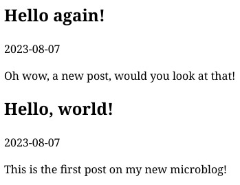
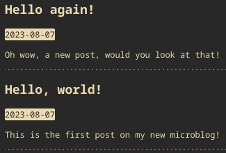

How I added an embedded microblog to my website
(And how you can do it too)What even is a microblog
The term "microblog" was coined in the mid 00s to refer to the latest in a series of innovations to the blogging medium: instead of (or apart from) having a regular blog, people would have "linklogs", "photologs", "vidlogs" (or "vlogs") and such, where they would blog using those specific forms of media as a change of pace from the regular "article"-based blogs everyone had come to expect.
Eventually, sticking to a single one of these mediums became restrictive, and people started creating "tumbelogs" (Tumblr's namesake!) where they would mix and match between them as they saw fit. This naturally led to these smaller blogs becoming less structured and dropping all parts of the regular blogging experience they deemed unnecessary in favor of a fast-paced stream-of-consciousness blogging experience, which gave way to the concept of a "microblog".
According to a contemporary blogpost, Microblogs were unstructured (often self-coded) websites where people would post tweet-ish length posts that could be followed using RSS or other technologies. This was very convienient for bloggers of the time, as lots of them felt pressured to only write high-quality long-form content for their full-sized blogs, and Microblogs gave them the freedom to just be casual and take the pressure off blogging.
Naturally, this led to a lot of third-party microblogging platforms —like Twitter— getting launched, which reduced the technical know-how needed to have a microblog and "democratized" access to the medium. These new platforms then decided to spend the last decade and a half crushing both traditional blogging and our attention spans under bloat and corporate greed, but I digress.
My point is that it's easy to draw parallels between the microblogs of the mid-aughts and the current handmade website movement: they were tired of the pressure of a regular blog and we are tired of algorithmic feeds; they responded to this by taking the convenient features of the era (internet search and RSS) and simplifying their medium into something reminiscent of slightly older websites, and we are taking the possiblilities of modern HTML and CSS3 and adapting them to the Web 1.0 "do it yourself" philosophy. It's sweet. It's fitting.
Why you should even bother
So! All this is nice and whatever, but why should you care? And why should you go the DIY way about it?
Look, I'm not the boss of you, and even if you do decide to make a microblog for your website there are plenty alternatives to this that already have semi-widespread adoption in platforms like neocities (status.cafe instantly comes to mind). While those alternatives are likely more robust than jerry-rigging your own DIY solution, there are many advantages to writing and hosting your own:
It's immune to linkrot
The most important reason, in my opinion, is that relying on third-party hosts for any of your content leaves you vulnerable to linkrot, which means that whatever third-party service you are using could go offline at moment's notice, taking your blog's posts and that section of your website away with it. The indie web should push for websites to be designed to last, and dependence in third-party services is sadly inherently antithetical to that concept.
This is the also the reason you should host resources like fonts or images on your own website instead of hotlinking or hosting them on, say, Tumblr or Discord: you never know when the website you're hotlinking from might move the files or go offline, plus hotlinking uses other people's bandwidth and makes loading those resources slower for people visiting your website.
It has a very small attack surface
One of the main advantages of static websites is that, since they don't need server-side software beyond the actual web server, they have an extremely low vulnerability to malicious activity more harmful than, say, a DDoS attack. While using third-party code is very useful to reduce the web design workload, it also leaves you open to the possibility of the original developer getting hacked and someone inserting malicious code into your website, or to someone even doing that on purpose. Hell, one of the main issues with mainstream websites is that you can't even look for hummus recipes without getting your browser fingerprinted and your data sold to fucktons of companies.
In summary: Google Analytics is a vampire; don't let it into your house.
It's customizable and expandable
While a lot of third-party solutions do allow for some degree of customization, it's usually pretty limited, and it may prove insufficient if you (like me) have a very specific style in mind for your website. Designing your own microblog gives you full control over its code, so you can make your website look and behave exactly the way you want it to! And even if you can't get it there quite yet, you can gradually build your way there while learning more about web development in the process~
It's easier than you think
Finally: I know this might sound overwhelming at first, but the entire point of this is to take things at your own pace and use it as a learning opportunity. Project-based learning is probably the best way to improve your coding skills, and I promise that, even if you are an absolute beginner, whatever knowledge you already have will carry you 90% of the way there! Take back control of your internet presence, you can do it :3
How to actually do it
The HTML skeleton
The essential part of this tutorial will be split in three steps, each of which will leave you with a gradually more refined finished product. The first of these steps is writing the HTML part of your microblog, aiming to get code simple enough that adding new articles isn't too much of a hassle.
If you finished Neocities' "Intro to HTML" tutorial, you already know most of what you will need to get something functional enough up and running, as the core of what we will be building today is just writing a small and very simple website. Since there at least as many ways to make websites as there are webmasters, you can essentially do whatever you want for this step! However, this tutorial will follow a simplified version of what I did for my own microblog.
First, create a new HTML document, and make sure to fill in the necessary information in your <head> element so the first couple lines of your file look something like this:
<!doctype HTML>
<html lang="en">
<head>
<meta charset="UTF-8">
<meta name="viewport" content="width=device-width, initial-scale=1.0">
<title> Microblog </title>
</head>
If you want, you can change that lang="en" to your language's ISO 639-1 code. It's always a good idea to add a lang attribute to your website's <html> element, because it helps web browsers and search engines know what to expect to find in there.
With that out of the way, let's write our first post!
Since you obviously care about making the indie web accessible to people using screenreaders or other sorts of assistive technology, it's a good idea to put your post inside an <article> element. By using a semantic HTML elements like this instead of a generic <div>, assistive software will instantly know what kind of content to expect in this section of your website, which makes it significantly easier to browse for people with disabilities and/or special use-cases.
I wanted my posts to have titles, I'm putting those inside a <h1> element so that assistive software knows that it's the article's heading. You might have heard that having multiple <h1> elements in a single website is bad practice, but browsers and assistive technologies should parse it correctly as long as the repeated <h1> elements are inside page structure elements like <article>. Even more reasons to use semantic HTML!
I also wanted my articles to have the date they were posted, so it would be easier to browse and to give some context to posts if someone were to read them in the future. I used the <time> element for this —even though it doesn't really have any specific functionality— to make the code more readable and because it's good practice to use semantic HTML elements whenever possible. Sadly, since this tutorial is mostly intended for neocities and other platforms that don't allow server-side code, there is currently no way to automatically fill this field and you will have to write down dates manually. I'm working on a way to automate it for my own use case, but that goes far beyond this tutorial's scope.
Now that we know what we're using, let's open the <body> element and build our post inside it:
<body>
<article>
<h1> Hello, world! </h1>
<time> 2023-08-06 </time>
<p>
This is the first post on my new microblog!
</p>
</article>
</body>
Now, just to make sure you understood the process, add another <article> element above the one we just created, making sure to use the same structure as the first post.
Done already? Good! Your microblog should look something like this at this point:
And just like that, you're done! If you want, future posts can include images, videos, or anything you want, just remember to put them above old posts if you want them to show up on top!
Now let's move onto making this microblog fit the rest of your website's visual style, because even though there is nothing wrong with a pure HTML website, you will likely want something a bit more polished.
Styling with CSS
There are many ways to go about adding a stylesheet to a website, but to avoid compatibility issues with my main stylesheet, and for the purposes of this simple tutorial, we will be using a <style> element inside your document's <head>. Remember: everything we add in this section will go inside that element.
<!doctype HTML>
<html lang="en">
<head>
<meta charset="UTF-8">
<meta name="viewport" content="width=device-width, initial-scale=1.0">
<title> Microblog </title>
<style>
[STYLESHEET GOES HERE]
</style>
</head>
If you have a defined color palette for your website, it could be a good idea to create CSS variables for those colors in the :root element. This way, instead of typing the hexadecimal code for your colors each time you want to use them, you can just reference the variables by typing var(--VARIABLENAME) anywhere in the document you would usually type in a color code.
:root {
--bg: #282828;
--fg: #ebdbb2;
--accent: #d3869b;
}Now we can start working on some basic styling. Since this blog's main purpose is to be displayed as a small iframe embedded somewhere else, there is no need to build a complicated layout. We will just style the elements we just created in the HTML section so that they jit the rest of your page's design.
Let's start by styling the <body> element. The following codeblock defines a background-color for the entire website, a color for all text, and a font-family to define what what font everything should be displayed with.
body {
background-color: var(--bg);
color: var(--fg);
font-family: monospace;
}
Next, we will style the <time> element to differentiate it from the text around it. In this case, I switched the background-color and color around, and added a border-radius to round off the corners a little bit
time {
background-color: var(--fg);
color: var(--bg);
border-radius: 2px;
}
To wrap up on basic styling, let's add some sort of separator between <article> elements, to make it clearer where one post ends and the next starts. In this case, I just used a dashed bottom-border to get a subtle separator that doesn't get in the way of the text.
article {
border-bottom: 1px dashed var(--accent);
}At this point, we have added enough styling to have a serviceable enough stylesheet! Your microblog should look something like this:
This is the point where personal style and preferences take over, so you are better off using resources like W3Schools or the MDN web docs instead of following this tutorial down to the letter. Use your own CSS knowledge to iterate on the design and gradually make it more yours. With time, you will be able to build something that looks great!
Embedding it in your website
We're on the home stretch now. All that remains now is to insert the microblog in your website. While this step is mostly pretty simple as far as code is concerned, there are many factors that depend on your website's design, so you will have to adapt things as you go.
First thing you will have to do is actually embed the file somewhere in your website. Go to whatever part of your document you want to put your microblog in and insert an <embed> element like the one in this codeblock, making sure to actually put your microblog's .html file's location as the src= attribute's argument.
<embed
type="text/html"
src="microblog.html"
title="Microblog"
class="microblog">
Now, check how the microblog looks on your website. Hopefully, it will fit just fine and have the right dimensions. If not, you will have to adjust it in your website's stylesheet, using the .microblog CSS class we gave it. For instance, in my website it overflowed its container, so I set its width and height properties so that it would fill it instead of spilling everywhere.
.microblog
width: 100%;
height: 100%;
}As an example, this is what it looked like before and after I added those properties to my stylesheet
Before
After
You will probably have to adjust it a little to make it properly fit your layout, but the width and height properties are always a good starting point. Remember you can use your browser's Developer Tools (press F12!) to debug your layout and try things out without having to push them to the live version every single time.
Aaand congratulations! The base infrastructure for the microblog is done! I hope this tutorial was actually useful to you, and that it helps you depend less on external services to keep your website up and running. If you want to check out the code for the demo microblog we created in this tutorial, you can do so here, and you can read my personal microblog here. If you have any questions, feel free to ask me on tumblr while I set up a proper contact form on this website.
Good luck!
- Deer